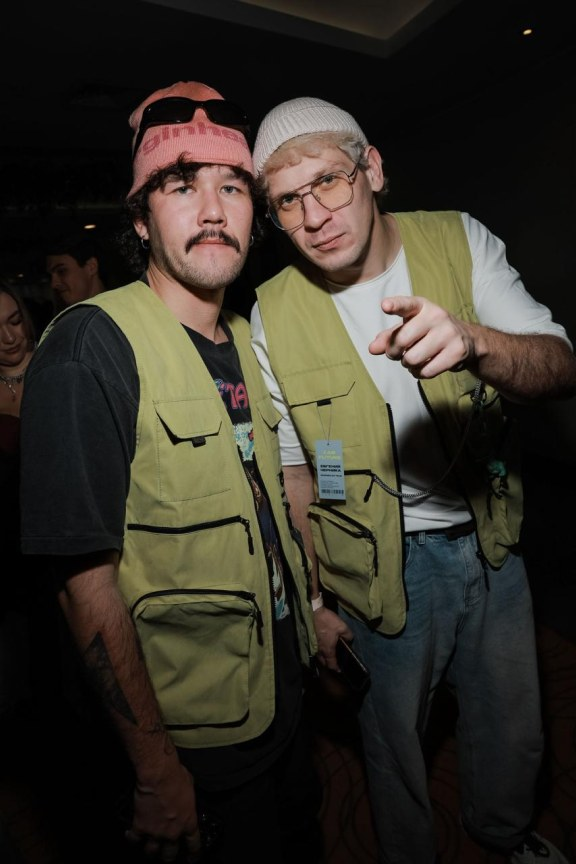
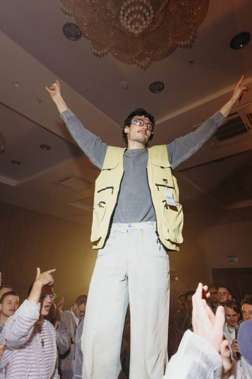
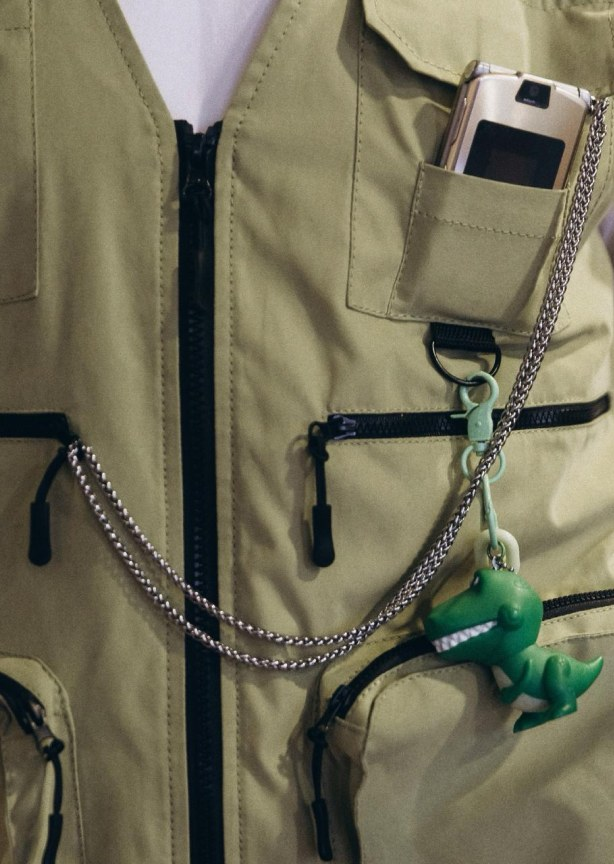
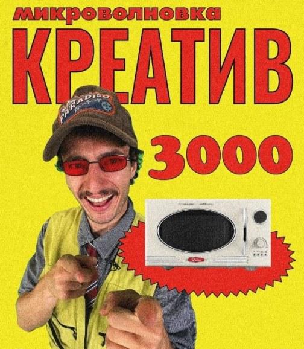

Жилеты для креативного агентства PLOT№
Проект начался с запроса на форму для двухдневного мероприятия — задача была не просто одеть команду, а собрать визуально цельное решение, которое будет работать в динамичной среде.
В основе — жилеты в фирменном цвете креативного агентства PLOT№, с лаконичным и аккуратным брендингом.




Отдельное внимание было уделено деталям. Логотип не выносился наружу как отдельный элемент, а был интегрирован в изделие через вышивку матовыми нитками вместо привычной бирки. Для сборки использовались немецкие нитки Gütermann, подобранные точно в тон, с акцентом на плотные отделочные строчки и чистую внутреннюю обработку.
В результате получилась партия, в которой все изделия выглядели как единое целое — без расхождений в цвете, строчке и посадке. Это тот случай, когда вещь начинает жить внутри события: команда активно носила жилеты, а нас в процессе буквально завалили фотографиями — как естественным продолжением того, как продукт воспринимается в реальной среде.